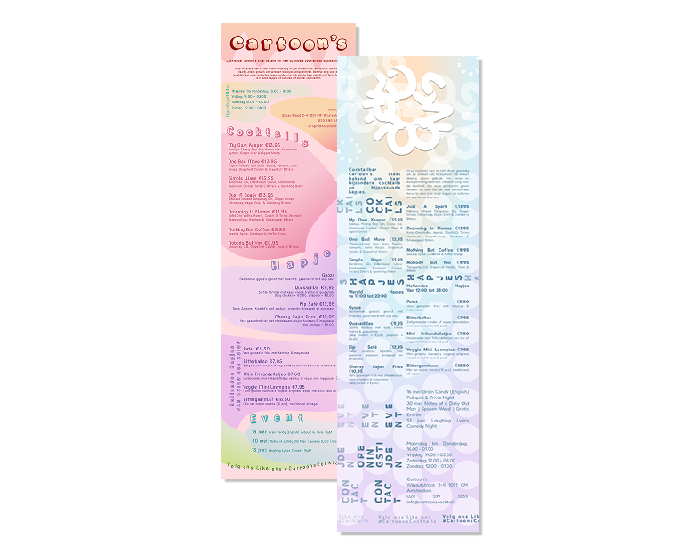
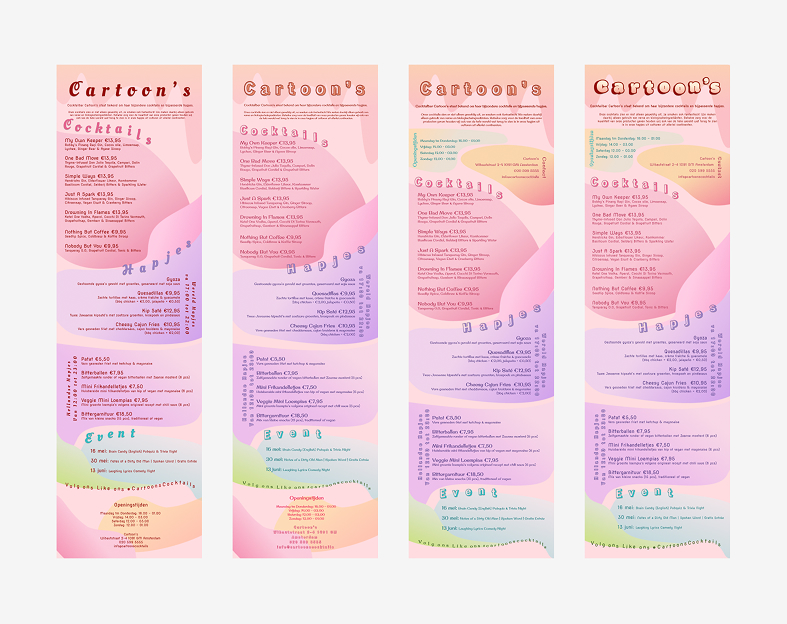
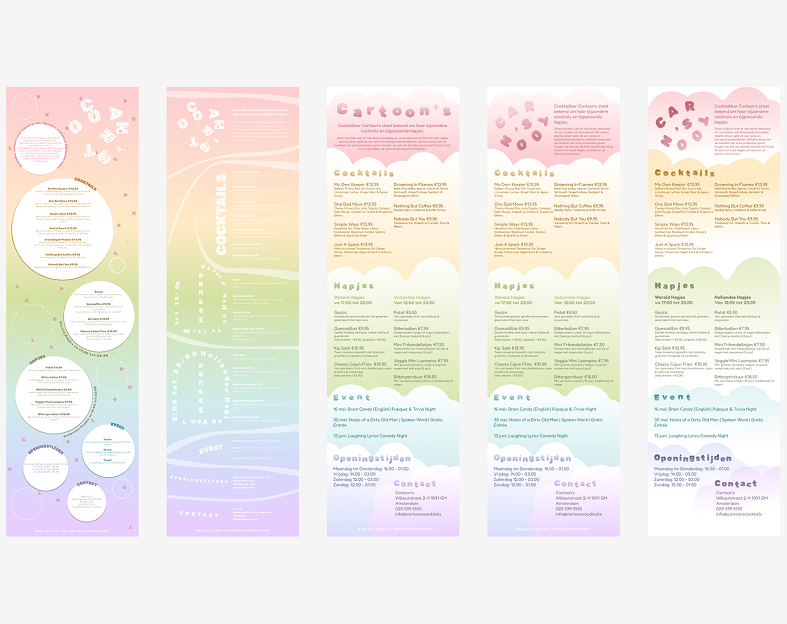
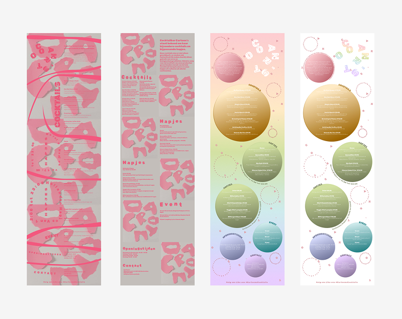
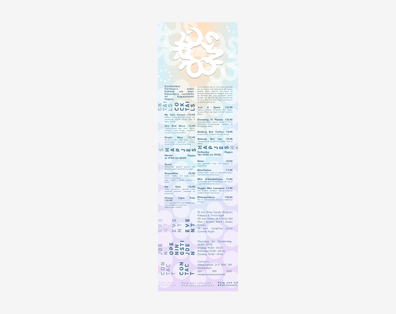

Cocktail bar one-pager in my own style
Graphic design (Figma)
View Design Rationale ↗About this project
For this Vormgeving project, I had to create a cocktail bar poster based on my own name and style. The goal was to design something bold, playful and expressive.
I experimented a lot with different fonts, colours and shapes to find a visual language that felt unique and matched the energy of a lively cocktail bar. The assignment encouraged me to push the design “as crazy as possible” while still keeping it readable and visually balanced.
Preview progress



